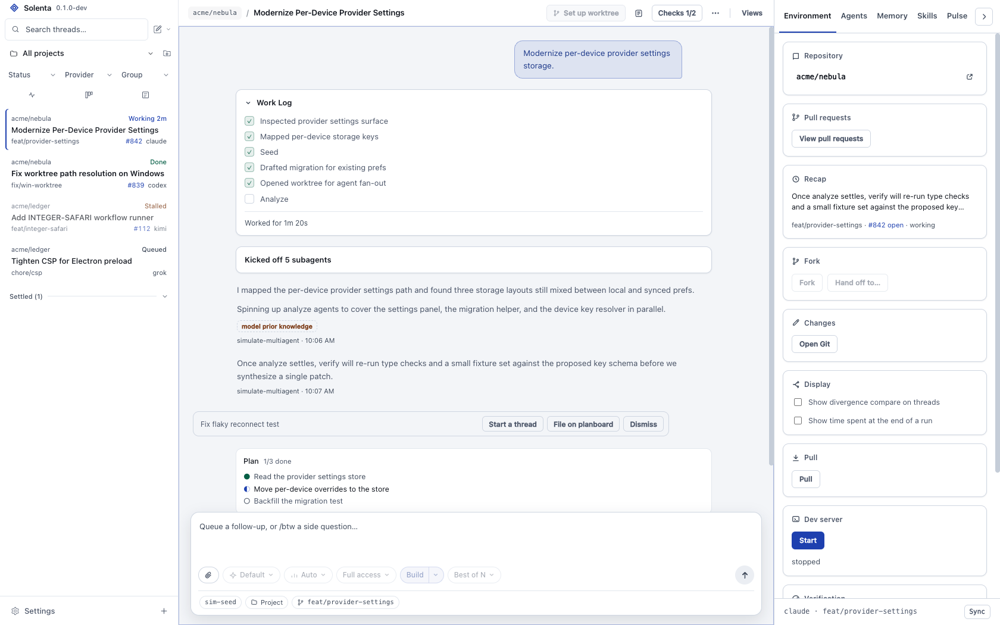
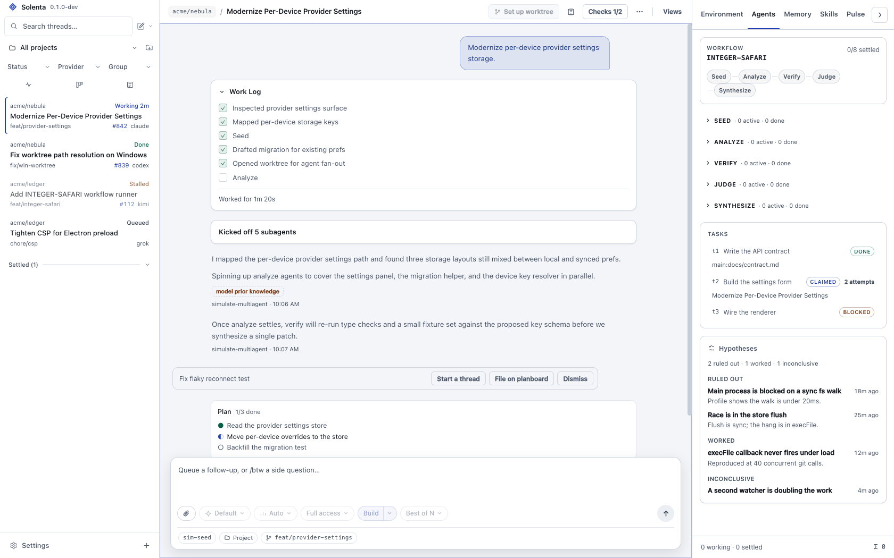
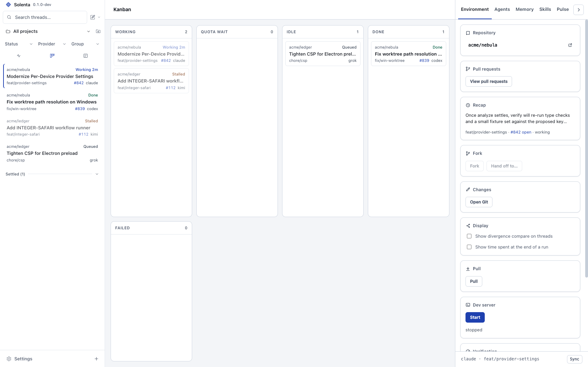
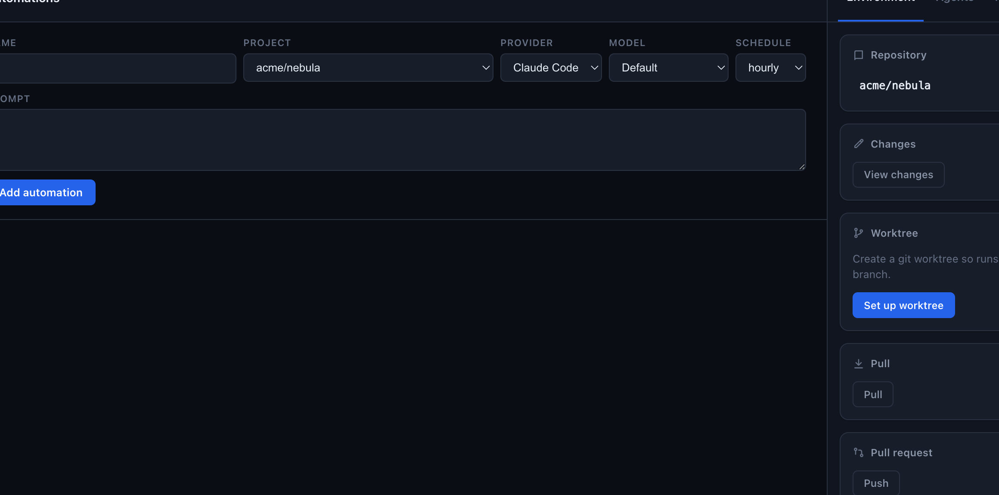

Document SSH remote setup
Start task
One shared memory across every agent, and a planboard that is your GitHub issues. Agent six begins knowing what agents one through five already ruled out. Claude Code, Codex, Kimi, Grok and OpenCode, each thread in its own git worktree. Free and open source.
Your code never leaves your machine. · Bring your own subscription, we don't resell tokens.

What one thread learns, the next one knows. Solenta injects a local memory server into every agent session automatically, so decisions and gotchas persist across Claude Code, Codex, Kimi, Grok and OpenCode. It is SQLite on your machine, with full-text and vector search, and a Memory tab so you can search, read and store entries yourself. The tenth session on a project is better informed than the first.
Ruled out a rewrite of auth. Cookie session stays; refresh lives in src/lib/auth.ts.
The 401 retry is in src/lib/api.ts. Moving it breaks the refresh path.
Starts knowing both. Adds the expiry skew and leaves the rest alone.
The board is plain GitHub issues with labels, so nothing is trapped in
a local database. Agents update it with gh. Your teammates
see the same board without installing anything. Start task on a Todo
card opens a thread on that issue. Needs the GitHub CLI signed in, and
a project whose origin is on GitHub.
No local-only planner can copy this.
Document SSH remote setup
Start task
Show remaining spend cap in the composer
Start task
Lead the site with memory and the planboard
Inject the memory server into every session
One git worktree per thread
Everything stays on your machine. Solenta drives the CLIs you already have installed.
Seed, analyze, verify, judge, synthesize. Fan out agents per phase, give each phase its own provider, and watch every phase settle live.

Claude Code, Codex, Kimi, Grok and OpenCode with sticky permission modes, model overrides and session resume.
Workers share a crew task list and message each other directly. A shared per-repo code index goes into every dispatched prompt, so a fresh worker starts knowing where things live.
Hints, not solutions, on every provider. Autonomy steps up as reviews pass, and permission modes stay gated to the current rung.
Every agent diff gets a risk-ranked read order: CI and config first, then reuse, the critical path, tests, and the rest.
A thread only settles green once its verify command exits 0. Guardrails protect the config a worker may not touch, and scan what it brings back for injection and secrets.
Merge rate, review tax, rework and cost per merged PR — read off git and GitHub, not off what the agents say about themselves.
Set a daily budget. A run that would cross it never starts. Token burn is visible per thread.
--serve-web puts the UI in a browser behind a token. Register projects on remote hosts and agents run there over SSH.
Working, idle, done, failed. Every thread at a glance.

Recurring prompts against any project: hourly, daily, weekly, with the provider and model you pick.

Every thread carries tools to drive the other threads. You describe the fan-out in plain language; the agent spawns, supervises and reports back.
Solenta is MIT licensed and runs on your machine. It drives the agent CLIs you already installed. Plans live in GitHub issues. Memory lives in a local SQLite file you can read and export. People who pick tools in 2026 ask who owns them. The honest answer here is you do.
Grab an archive from the latest release, then install whichever agent CLIs you want to drive. Solenta finds them on your PATH.
Apple Silicon
Solenta-0.1.0-macos-arm64.zip unzip, move to /Applications first launch: right-click > Open
x64
Solenta-0.1.0-win32-x64.zip unzip anywhere run solenta.exe (SmartScreen asks once)
x64
Solenta-0.1.0-linux-x64.tar.gz tar xzf Solenta-*.tar.gz ./solenta/solenta